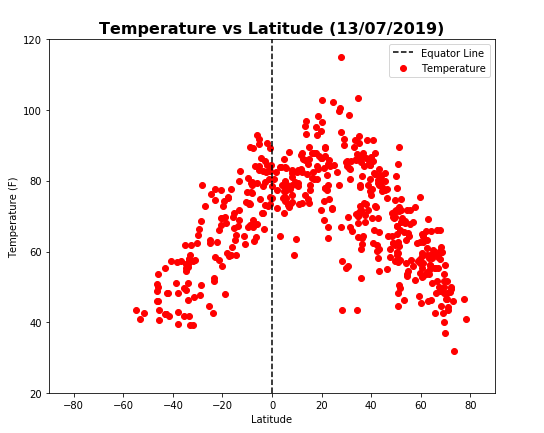

The objective of this analysis is to see if there exists any tendency on the weathers of various cities accross the globe. The main directive is to see if the weather changes with respect to the latitude of the city.
In this webpage you can see the results of such project
 Home